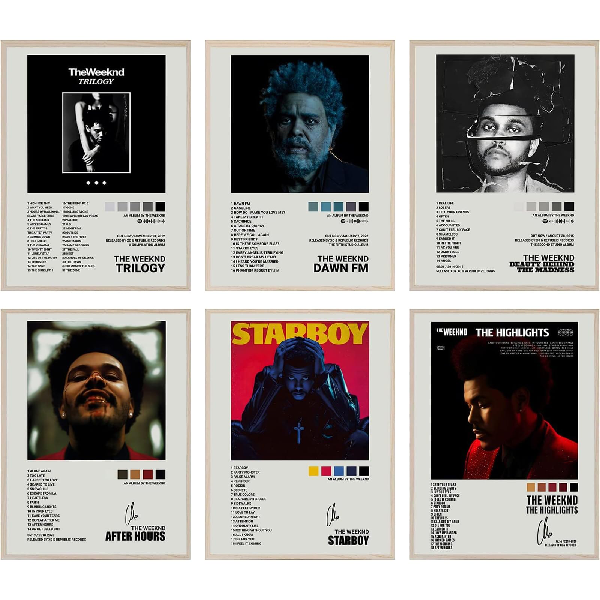
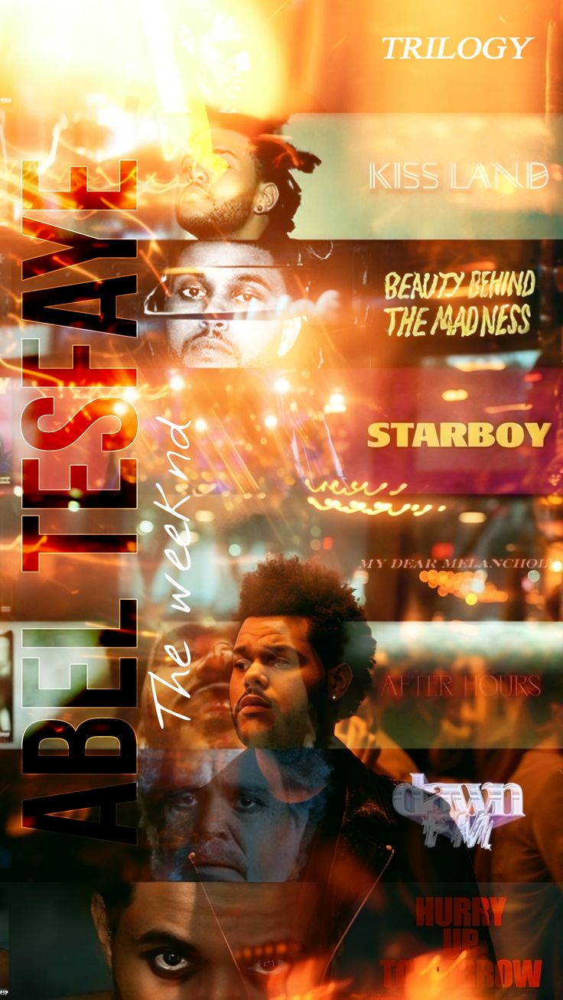

Starboy (2016)
Electropop redefiner and Grammy winning era.

After Hours (2020)
Critically acclaimed synth‑noir masterpiece.

Dawn FM (2022)
Concept synth‑pop with Jim Carrey narration.

My Dear Melancholy (2018)
Dark R&B EP reflecting emotional pain and love.